All three methods were implemented in DP.py, VI.py and Qlearning.py; python test.py passes every check. All figures below were produced by python visualize.py --experiment all --save-dir figures with the default settings (seed 0). Throughout, the start state is s(1,0) and the goal is s(5,5). Two routes to the goal matter for almost every result:
Column 0 has no rightward wind anywhere, so a balloon that enters it can never leave; it is a trap worth −1 per step forever. (It is also unreachable from the start, so Q-learning never sees it.)
| H | V*0(s0) | Route from start |
|---|---|---|
| 1 | −1 | goal unreachable |
| 3 | −3 | goal unreachable |
| 5 | −5 | goal unreachable |
| 7 | 6 | risky (exactly fits) |
| 9 | 6 | risky |
| 14 | 7 | safe (first horizon it fits) |
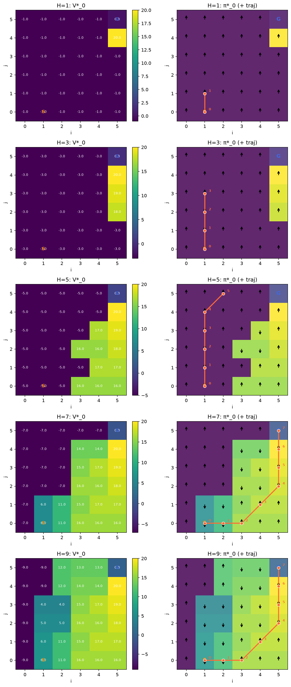
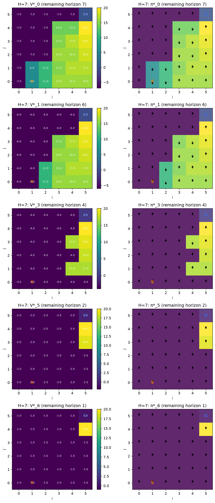
| γ | Iterations to tol = 0.01 | V*(s0) | V*(column 0) | Route from start |
|---|---|---|---|---|
| 0.9 | 45 | −1.66 | −9.9 | risky |
| 0.99 | 460 | 5.30 | −99.0 | safe |
| 0.999 | 4607 | 6.82 | −990.1 | safe |
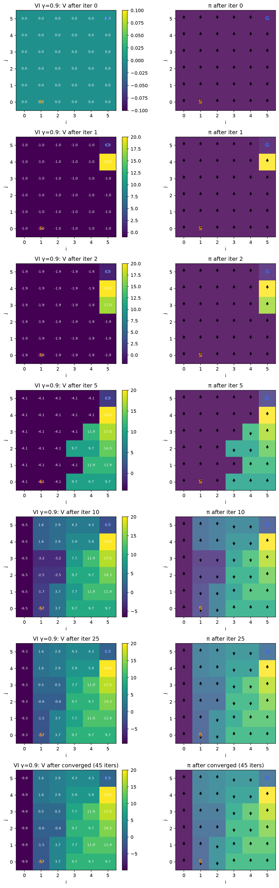
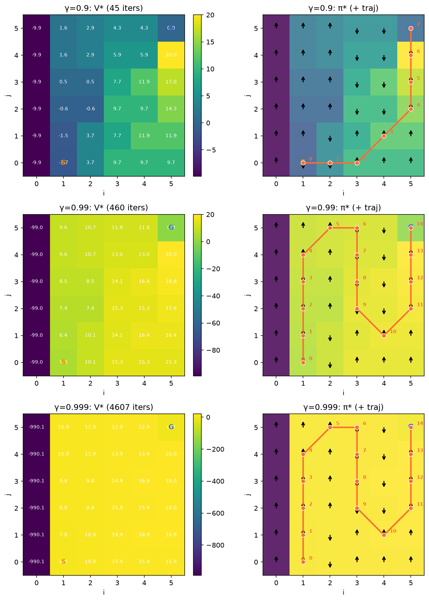
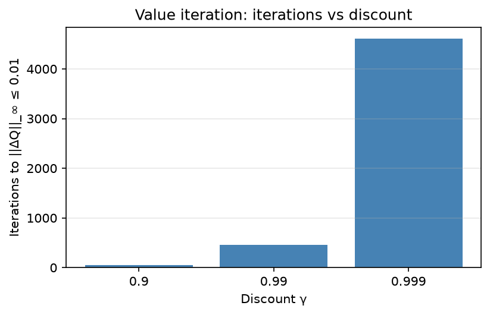
Settings: γ = 0.9 (so Q*VI is the 45-iteration solution above), 1000 episodes, α = 0.5, Q initialised to 0. Only ε is varied.
| ε | final Ek = ||Qk − Q*VI||∞ on Sreach | final policy agreement Ak | avg return, last 50 episodes | greedy route from start |
|---|---|---|---|---|
| 0 | 14.30 | 95% | 7.00 | safe (not optimal for γ=0.9) |
| 0.1 | 3.11 | 100% | 4.80 | risky (= VI) |
| 0.5 | 0.00 | 100% | −4.82 | risky (= VI) |
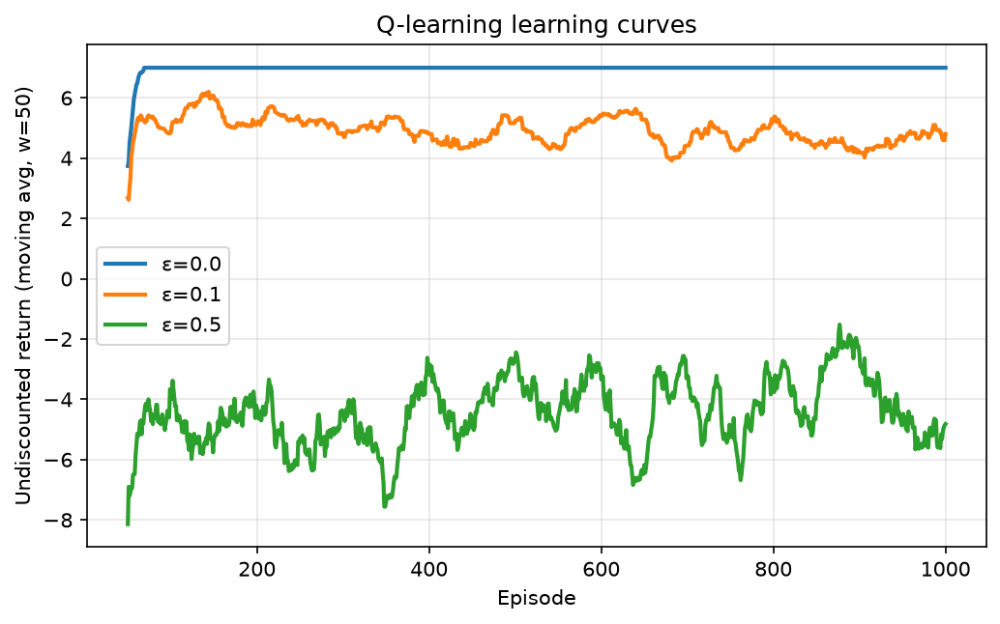
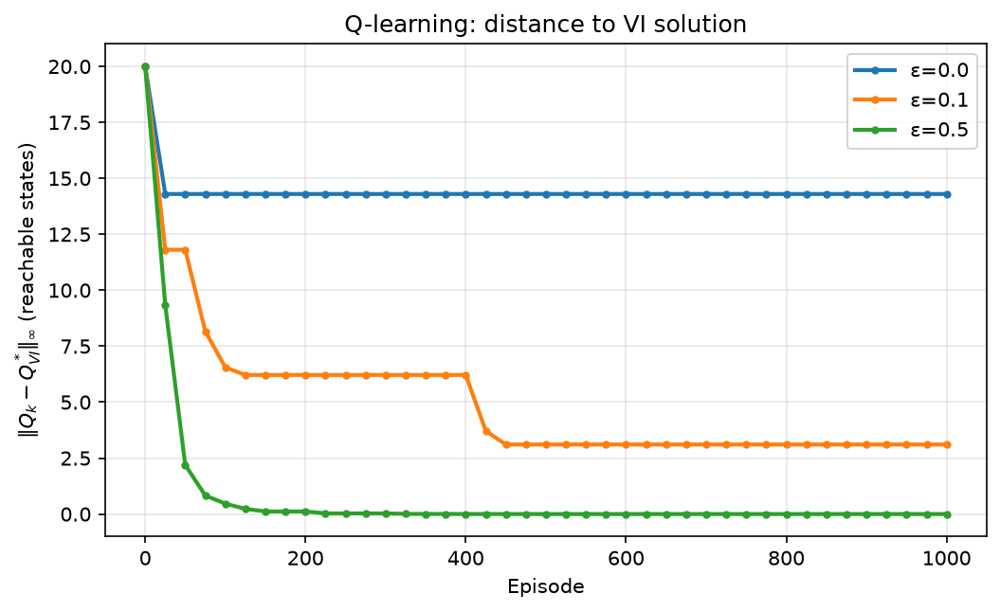
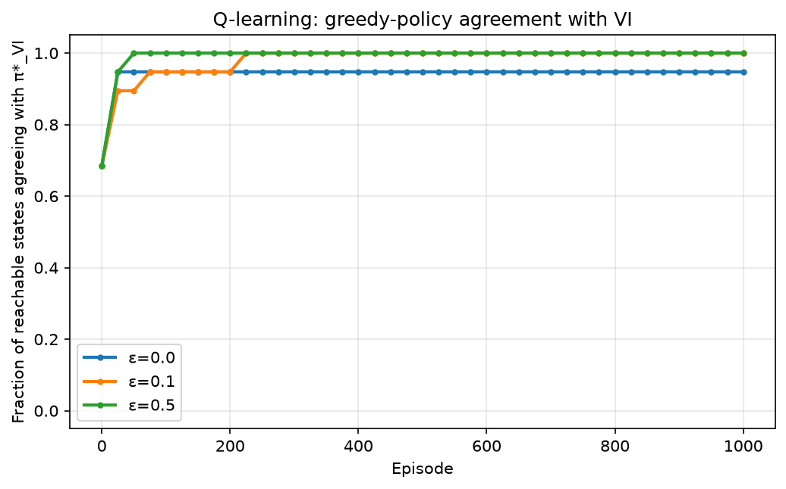
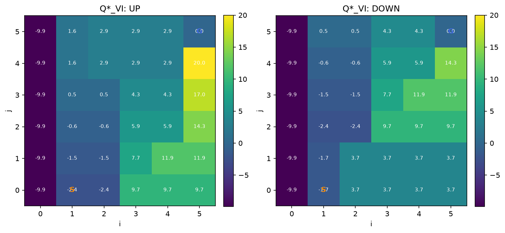
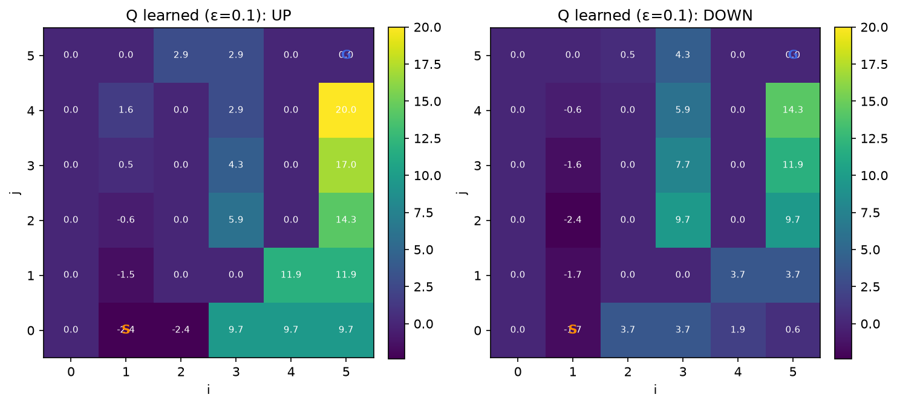
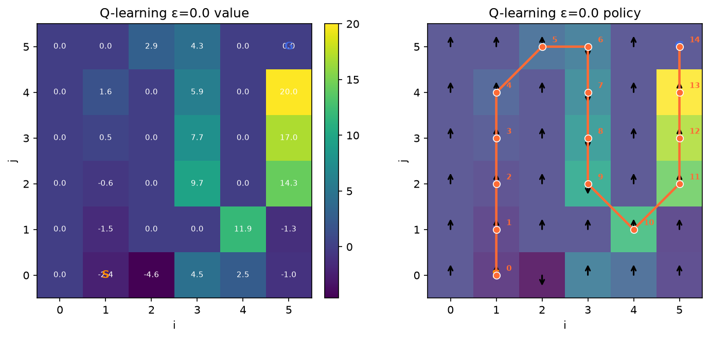
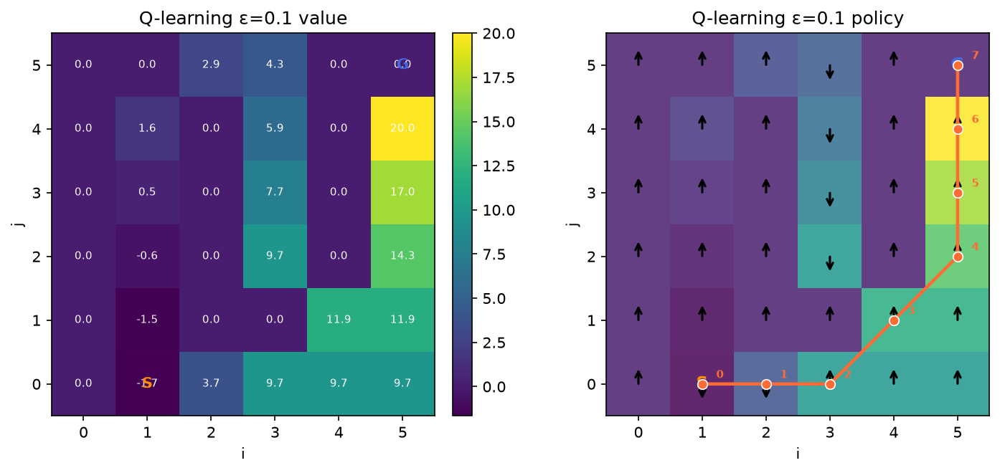
The shortest path from the start to the goal takes 7 steps, so for H ∈ {1, 3, 5} the goal is unreachable from s0 and V*0(s0) = −H exactly: the balloon pays −1 per step no matter what, and the only thing the policy can still do is avoid the −5 cells, which is why it points UP away from the bottom row. V*0(s0) is therefore not monotone in H. It falls (−1, −3, −5) while the horizon is too short, because each extra step is one more forced −1, then jumps to 6 at H = 7, the first horizon in which the risky route fits. It stays at 6 for H = 9 because the goal is absorbing (nothing more is earned after arrival) and the better safe route needs 14 steps; only at H = 14 does π*0 switch to it, giving V*0(s0) = 7. Column 0, which can never reach the goal, keeps falling as −H for every H. Figure 1 shows the same thing spatially: the set of states with positive value grows outward from the goal by one more layer per unit of horizon, and everything outside that set is worth −H. The time slices in Figure 2 show the same state getting different actions as time runs out: at t = 0 (7 steps left) the start state goes DOWN to begin the risky route, but at t = 1 (6 left) the goal can no longer be reached from the start, so π*1(s0) = UP to avoid the penalty cells. When the remaining horizon is too short, the balloon stops trying to reach the goal and just minimises the cost of the remaining steps.
γ sets how far ahead the agent effectively looks. The trapped column 0 makes this concrete: its exact value is −1/(1−γ) = −10, −100, −1000. (VI reports −9.9, −99.0, −990.1. Stopping when the change in Q is below 0.01 leaves an error of up to 0.01/(1−γ) in states whose returns are still accumulating, i.e. up to 10 at γ = 0.999; near the goal, where the absorbing state pins values down, the estimates are far more accurate.) γ also changes the optimal policy. The safe route's +20 arrives after 13 steps, so it is worth 20γ13 at the start: about 5.1 for γ = 0.9 but 17.6 for γ = 0.99. At γ = 0.9 the two actions at the start are worth Q*(s0, DOWN) = −1.66 (risky) versus Q*(s0, UP) = −2.37 (safe), so VI takes the −5 cells; for γ ≥ 0.99 the long safe route wins (5.30 and 6.82, approaching the undiscounted 7). The number of iterations grows roughly like 1/(1−γ): 45, 460, 4607 (Figure 5). The Bellman optimality operator is a γ-contraction, so the error shrinks by a factor γ per sweep and reaching a fixed tolerance takes k ≈ log(tol/err0)/log(γ) ≈ const/(1−γ) updates. Figure 3 shows the propagation mechanism: starting from Q = 0, each update pushes information about the goal one transition further outward, so after k updates only states within k steps of the goal have "seen" it.
For a long enough horizon the two agree: the DP policy π*0 for H = 14 is identical to the VI policy for γ = 0.999 (both take the safe route; V*0(s0) = 7 versus V* = 6.82), and both share the same structure everywhere: climb column 5, descend columns 3 and 4 so that the rightward winds at (3,1) and (4,2) carry the balloon into column 5, and treat column 0 as a dead end. They need not be identical, for two reasons. First, the objectives differ: DP maximises an undiscounted sum over exactly H steps, while VI maximises a discounted infinite sum. The horizon is a hard cutoff (a route either fits or it does not, which is why H = 9 still picks the risky route) while discounting is a soft, geometric penalty on delay; as γ → 1 and H → ∞ these converge, but for any finite H and γ < 1 they can rank routes differently. Second, the DP policy is time-varying, π*t depends on the remaining steps, whereas the VI policy is stationary; DP's π*0 happens to match VI only because at t = 0 the remaining horizon is large (already at t = 1, with 13 steps left, DP's action at the start flips back to DOWN).
Value iteration has the model. Its update Q(s,a) ← R(s,a) + γ Σs' P(s'|s,a) maxa' Q(s',a') uses the exact reward and the exact next-state distribution, so in one sweep it can evaluate every (s,a) pair, including states the balloon would never visit, and it needs no interaction at all. Q-learning only has reset() and step(). It never sees P or R; it sees one sampled transition (st, at, rt, st+1) at a time, and its target rt + γ maxa' Q(st+1,a') is a single-sample estimate of the expectation VI computes exactly (the learning rate α averages these samples over time). Because the sample comes from actually being in st and taking at, Q-learning can only update the pair it just visited. To learn Q for every state-action pair it therefore has to physically reach every state and try every action there, which is why it needs many episodes and an exploratory behaviour policy, and why the handout evaluates it only on Sreach: unvisited rows of the Q-table stay at their initial value (the untouched cells in Figures 11–13 still show the default UP).
More exploration makes the learned Q approach Q*VI faster and more completely, at the cost of worse return while training. With ε = 0.5 every reachable (s,a) pair is tried often, so Ak reaches 100% within about 50 episodes and Ek is essentially 0 by about 150 (Figures 7–8), but half of the actions are random, so the behaviour return hovers around −5 (Figure 6). With ε = 0.1 the greedy policy matches VI after about 220 episodes, but Ek plateaus at 3.1: the worst entry is (5,0), DOWN, an action the greedy policy never takes, so it is updated only on rare random steps (learned 0.6 versus Q* = 3.7). The return during training (≈4.8) is close to the optimal 6, degraded only by the occasional random step. With ε = 0 the agent is purely greedy, which is not quite the same as never exploring: because every step costs −1, a tried action's estimate drops below the untried action's initial value of 0, so early on the agent does wander (its first episode takes 22 steps, and it visits the whole bottom row). The problem is that an estimate is only refreshed while the greedy policy keeps choosing that action. The agent tried DOWN at the start while the bottom-row values were still poor, received a bad sampled return, and Q(s0, DOWN) settled at −7.4 (its true value is −1.66); from then on UP (−2.37) looked better, DOWN was never selected again, and the stale estimate was never corrected even after the bottom-row values improved. From about episode 15 onward the agent repeats the safe route forever: Ak is stuck at 95% (the start state is the one disagreement), Ek at 14.3 (Q*((5,4), DOWN) = 14.3, but that pair is never tried, so its entry stays at 0), and the learning curve is a flat line at 7. That line looks like the best of the three in Figure 6, but it is the undiscounted return of a policy that is suboptimal for γ = 0.9. This is the general problem with ε = 0: without exploration Q-learning has no mechanism to revisit and correct a pessimistic estimate, so it can converge to the wrong policy.